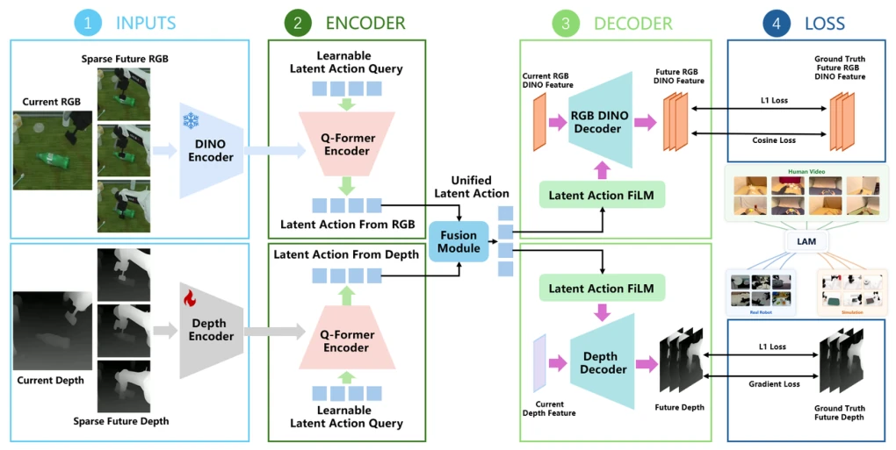
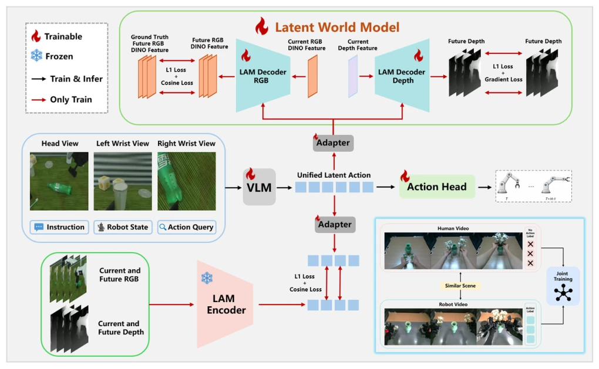
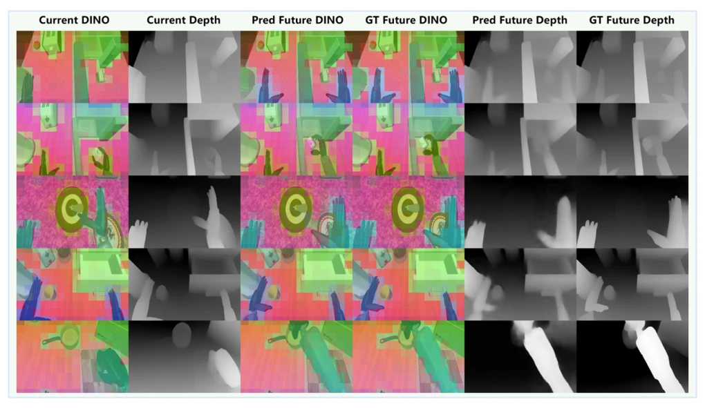
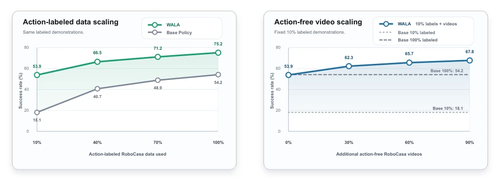
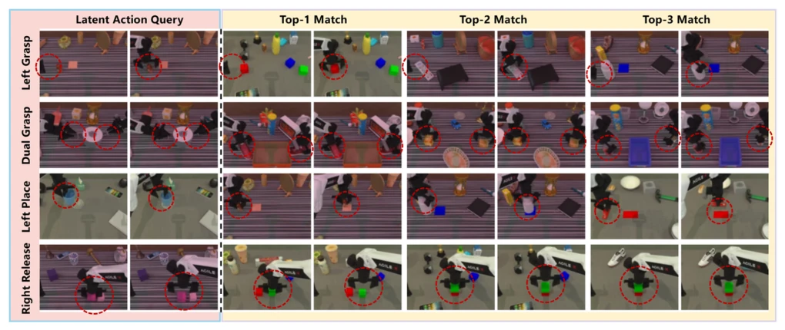
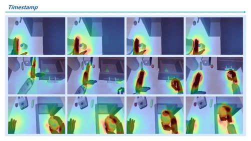
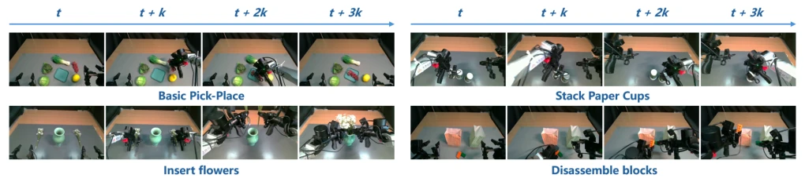
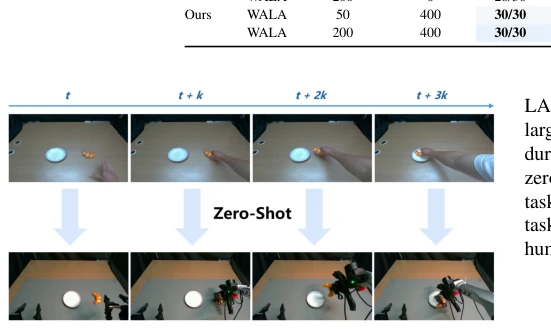

WALA attempts to address the data hunger of embodied AI using "semantic-geometric" latent action variables. It does not directly reconstruct pixels but predicts DINOv3 features and depth map deltas; this approach is quite clever, saving computational waste from reconstructing appearance and allowing the model to focus more on task-relevant structural changes. Achieving 75.2% SOTA on RoboCasa is indeed impressive, proving the effectiveness of future dynamic supervision. But do not celebrate too early; it still relies on a small number of robot demonstrations to "align" actions, pure zero-shot transfer is currently only verified on a single task, and there is still a distance from the true "human video as policy". Moreover, although the world model is removed during inference, the two-stage process during training increases engineering complexity, and the pretraining data scale remains limited. Overall, this is a pragmatic intermediate solution, capitalizing on the popularity of human videos without losing the bottom line of robot control, suitable for scenarios with a small amount of real robot data but wanting to leverage massive videos.
General robot policies typically rely on demonstration data with action annotations, but this is too expensive and difficult to scale [7][8]. In contrast, human videos are abundant and cheap, but lack directly usable action labels. Existing VLA models [7][8][9] mainly rely on robot demonstrations, with weak supervision on physical consequences, making it difficult to cover long-tail physical interactions. World models [12][13][14] can predict the future, but often focus on pixel reconstruction or implicit dynamics, not tightly coupled with executable actions, leading to video data being difficult to directly convert into control signals. WALA aims to resolve this contradiction: how to extract action-related dynamics from videos without action labels and convert them into training signals, thereby connecting physical scene evolution with executable control and reducing reliance on expensive robot data.
WALA is divided into two stages. First, pretrain the semantic-geometric latent action model (LAM). The encoder utilizes current observations and sparsely sampled future observations to compute semantic/geometric deltas of DINOv3 features and depth maps, inferring latent action targets. The decoder predicts future deltas, the loss function includes feature L1/cosine and depth L1/gradient consistency, avoiding pixel reconstruction and focusing on task-relevant structures. Second, conduct policy training. The pre-trained encoder is frozen, providing stable latent action targets; the decoder serves as a trainable latent world model. The VLA backbone (Qwen3-VL-4B) generates unified latent actions, through robot action prediction, latent action target matching, and future dynamic prediction triple supervision. Robot action loss ensures executability, the latter two ensure scene evolution consistency. During inference, only the VLA backbone and action head are used, with no world model inference overhead, making deployment efficient.

Fig. 1. Overview of the semantic-geometric latent action model pretraining. Given the current observation and multiple sparsely sampled future observations, WALA extracts RGB features with a frozen DINOv3 [1] encoder and obtains dense depth maps from depth observations or a frozen depth estimator [2]. The encoder infers latent action targets from observed semantic and geometric deltas, while the decoder predicts future DINOv3 feature deltas and dense depth changes from the current state and latent actions. Pretraining can combine human and robot video sources such as EgoDex [3], RoboCOIN [4], RoboTwin [5], and RoboCasa [6].

Fig. 2. Policy training with WALA. The pretrained latent action encoder is frozen and provides stable latent action targets from observed future changes. The decoder is integrated as a trainable latent world model. In our implementation, the vision-language backbone is instantiated with Qwen3-VL-4B [22] and generates unified latent actions from multi-view observations, language instructions, robot states, and action queries. These latent actions are supervised by robot action prediction, latent action target matching, and future dynamics prediction. Red arrows are used only during training, while black arrows indicate the inference path.

Fig. 3. Visualization of future semantic and geometric prediction. For each example, WALA observes the current DINOv3 feature visualization and current depth map, then predicts future DINOv3 feature and depth changes. We visualize the future states obtained by adding the predicted deltas to the current state and compare them with ground-truth future features and depth maps. The predicted future states preserve action-induced semantic changes and spatial geometry without reconstructing raw pixels.
Evaluated on RoboTwin 2.0 and RoboCasa-GR1-Tabletop, and tested on real robots. RoboCasa average success rate 75.2%, better than baselines like DIAL. Data extension experiments show that even with only 10% labeled data, adding action-less videos can significantly improve performance, verifying the value of video dynamic supervision. Ablation experiments confirm that semantic + geometric prediction is more effective than single supervision, LAM pretraining and dynamic prediction are indispensable. In real tasks, WALA under 50 demonstrations + 400 human videos, performance is close to the effect of 200 demonstrations, proving the compensatory effect of human videos on low-label scenarios. Zero-shot transfer also shows improvement on unseen tasks, but sample size is small, requiring further verification of generalization.

Fig. 4. Data scaling on RoboCasa-GR1-Tabletop. Left: WALA consistently improves over the Base Policy when both use the same amount of action- labeled demonstrations. Right: with only 10% action-labeled demonstrations fixed, adding action-free videos further improves WALA, showing that videos without robot action labels can still provide useful dynamics supervision.

Fig. 5. Latent action retrieval. We encode each query transition into latent action tokens and retrieve nearest neighbors from the dataset using latent-action feature similarity. Retrieved examples share similar manipulation primitives, such as grasping, placing, and releasing, despite changes in object appearance, scene layout, and camera view. This suggests that the learned latent actions capture action-relevant transitions rather than only static visual similarity.

Fig. 6. RGB attention visualization of the latent action encoder. The attention is concentrated around hands, manipulated objects, and contact regions, indicating that the encoder focuses on image regions that are informative for action-induced scene changes.

Fig. 7. Real-world manipulation tasks used in our evaluation. We test a single multi-task policy on Basic Pick-Place, Stack Paper Cups, Insert Flowers, and Disassemble Blocks. Each row shows temporally sampled frames from one successful rollout.

Fig. 8. Zero-shot transfer from action-free egocentric human videos to a robot manipulation task. The top row shows a human video of grasping bread and placing it onto a dinner plate, while the bottom row shows the WALA policy completing the corresponding robot task without robot demonstrations for this task.